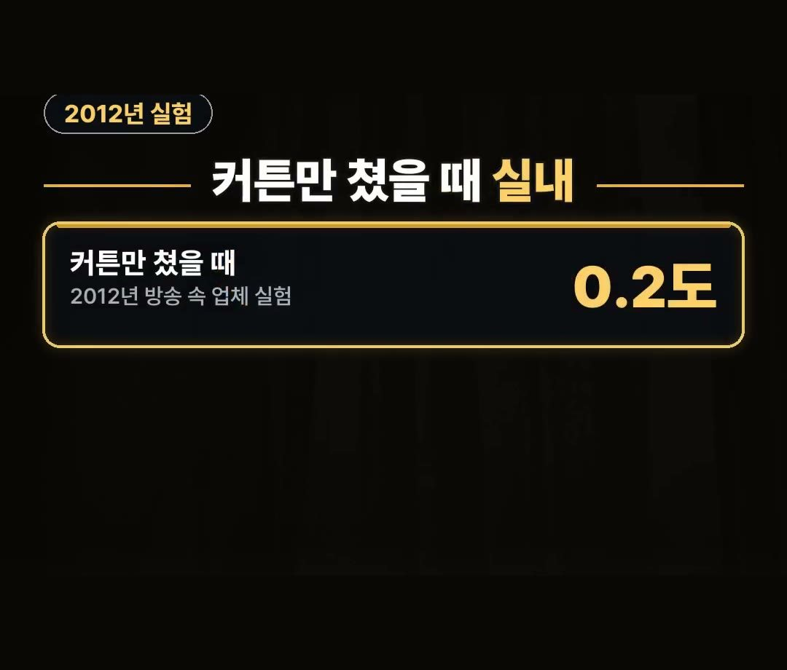
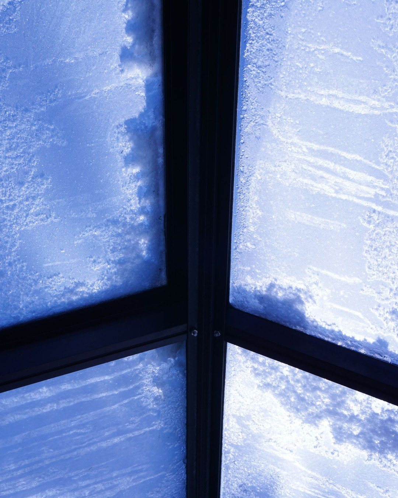
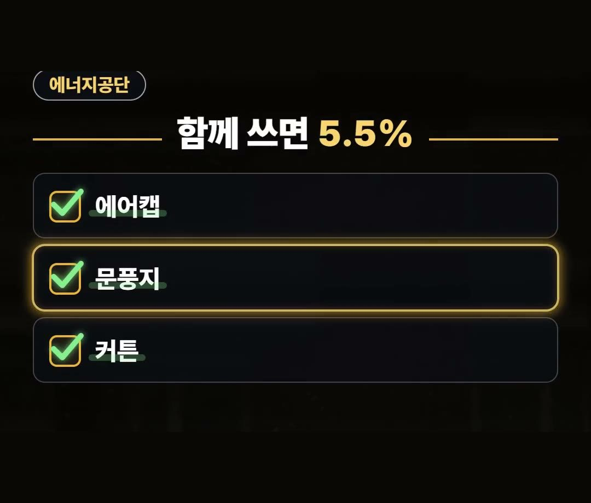
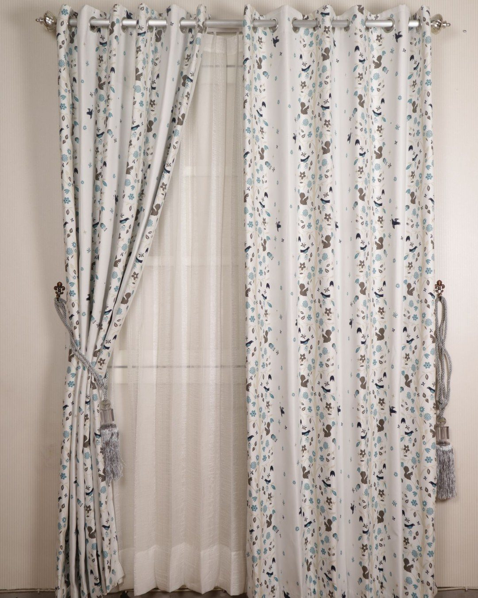
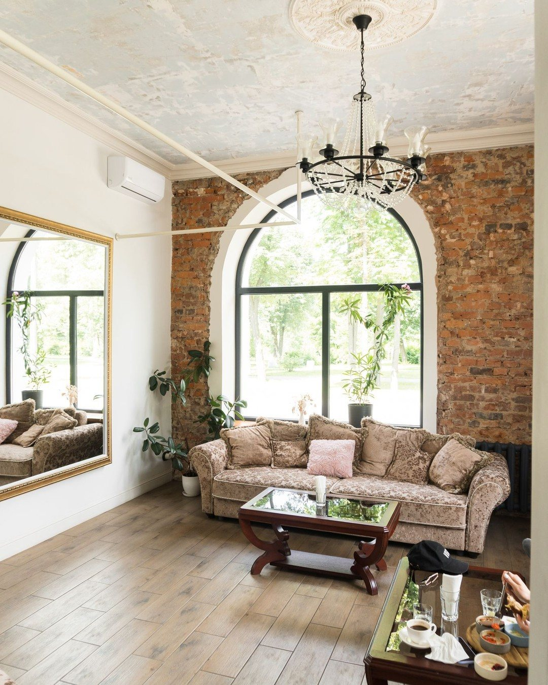

단열 커튼 효과, 커튼만 달면 0.2도·함께 쓰면 한 달 에너지 5.5%
※ 이 글에는 제휴 링크가 포함되어 있으며, 링크를 통해 구매하시면 일정 수수료를 받을 수 있습니다. (가격은 같습니다)
※ 이 포스팅은 쿠팡 파트너스 활동의 일환으로, 이에 따른 일정액의 수수료를 제공받습니다.
2012년 방송에 나온 건축자재 업체 실험에서는 두꺼운 커튼만 쳤을 때 실내 온도가 0.2도 오르는 데 그쳤어요.
창가 외풍 때문에 단열 커튼을 알아보고 계신다면, 커튼 하나로 끝내기 전에 알아 둘 조건이 있어요.
이 글에서는 단열 커튼 효과를 제대로 보려면 무엇을 같이 해야 하는지 정리해 드릴게요.
커튼만 쳤을 때 0.2도는 2012년 업체 실험 숫자예요.
에어캡·문풍지·커튼으로 틈새 열 손실을 줄이면 한 달 에너지 사용량이 5.5% 준다는 한국에너지공단 안내까지 같이 기억하세요! 🪟
단열 커튼 효과, 커튼만 쳤을 때는 0.2도
2012년 방송에 나온 업체 실험에서는 두꺼운 커튼만 쳤을 때 실내 온도가 0.2도 올랐어요.
- 커튼만 쳤을 때: 실내 0.2도(2012년 방송 속 업체 실험)
커튼 혼자일 때의 숫자예요.
그래서 창가 외풍이 심한 집이라면 커튼만 달고 끝내기보다 다른 단열을 같이 하는 게 좋아요.

창엔 뽁뽁이, 틈엔 문풍지
커튼과 같이 할 것은 두 가지예요.
- 창유리: 뽁뽁이(에어캡)
- 창틀 틈: 문풍지
유리에는 뽁뽁이를 붙이고, 바람이 새는 틈에는 문풍지를 더한 다음 커튼을 치는 순서예요.

함께 쓰면 한 달 에너지 5.5%
한국에너지공단 안내를 전한 기사에 따르면 에어캡·문풍지·커튼 등으로 틈새 열 손실을 줄이면 한 달 에너지 사용량이 5.5% 준다고 해요.
- 에어캡
- 문풍지
- 커튼
세 가지를 함께 쓸 때의 숫자라는 조건을 같이 기억해 두세요.
단열커튼 비교를 할 때도 커튼 하나의 효과보다 함께 쓸 것을 같이 보는 게 좋아요.

커튼은 창보다 넉넉하게
커튼을 고를 때는 크기를 먼저 보세요.
창보다 넉넉한 크기여야 창가에서 들어오는 냉기를 더 넓게 가릴 수 있어요.
- 고를 때 볼 점: 창보다 넉넉한 크기
단열 커튼 상품 후기에는 비침이 없다는 말이 많아요.
암막 기능이 있는지 상품 설명에서 같이 확인해 보세요.

큰 창부터 하나씩
집 안 창을 한 번에 다 바꾸기 어렵다면 큰 창부터 하나씩 막아 보세요.
1. 큰 창 유리에 뽁뽁이 붙이기 2. 창틀 틈에 문풍지 더하기 3. 창보다 넉넉한 단열 커튼 치기

정리
- 2012년 방송 속 업체 실험에서 커튼만 쳤을 때는 실내 0.2도였어요
- 에어캡·문풍지·커튼으로 틈새 열 손실을 줄이면 한 달 에너지 사용량이 5.5% 준다고 해요(한국에너지공단 안내)
- 커튼은 창보다 넉넉하게, 큰 창부터 하나씩 막아 보세요
제품 링크는 아래에 모아 두었어요.
📌 2026년 10월 기준 정보예요. 가격은 시기에 따라 달라질 수 있어요.
· SBS 두꺼운 커튼에 단열 필름까지…효과 있을까? (2012년 1월 14일 · 건축자재업체 연구원 실험)
· 핀포인트뉴스 한국에너지공단 겨울 난방 절약 (틈새 열 손실 줄이면 한 달 5.5%)
사진·영상영상 화면: Pexels (Artem Podrez, Caio Mantovani, Image Hunter, Kadir Altıntaş, MART PRODUCTION, Taryn Elliott)
사진: Pexels (Arenda Vermeulen, gorden murah surabaya, Max Bonda, Orhan Pergel)
사진: Pixabay (Albertfotofilms)